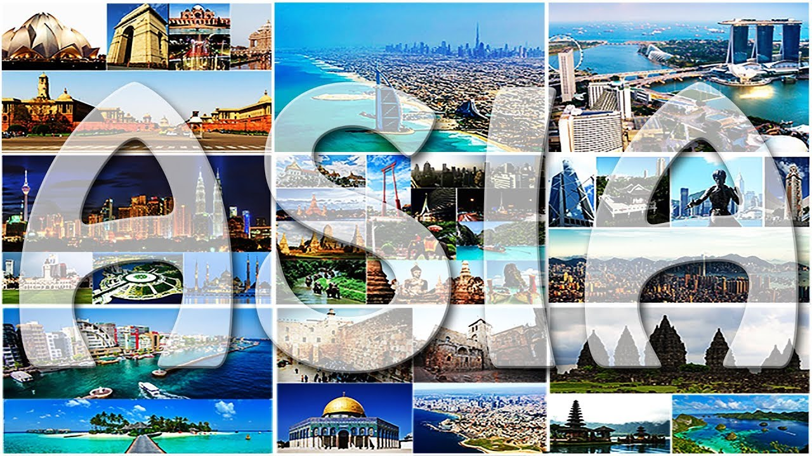
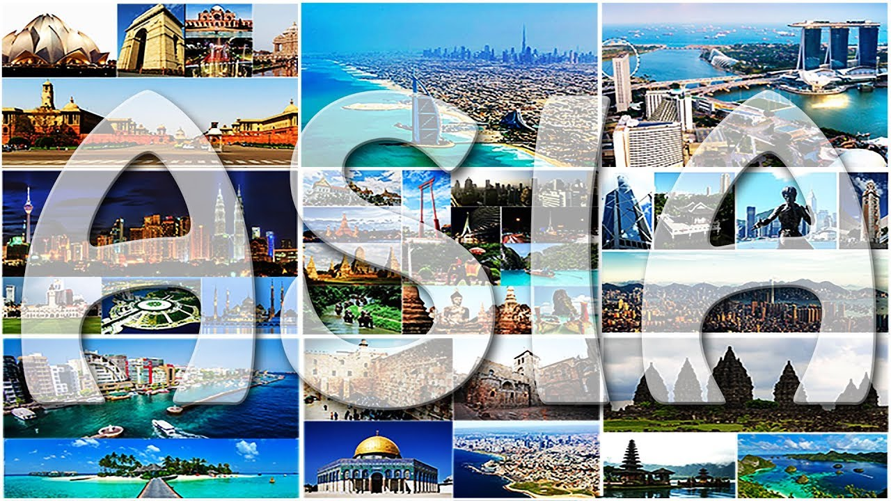
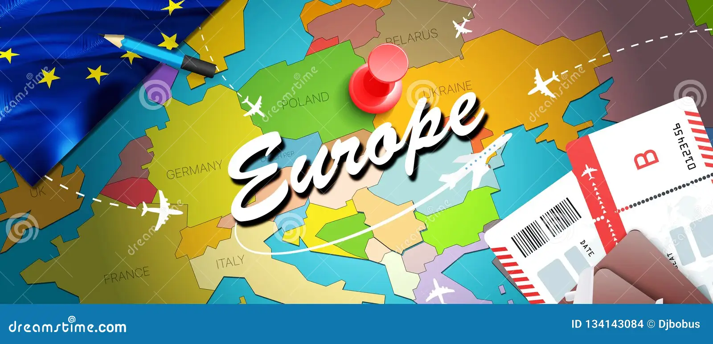

Asia
Home to some of the world's oldest cultures, fascinating architecture, beautiful natural landscapes, delicious foods and friendly locals; colorful Asia ticks all the right boxes for a top holiday destination

Home to some of the world's oldest cultures, fascinating architecture, beautiful natural landscapes, delicious foods and friendly locals; colorful Asia ticks all the right boxes for a top holiday destination
With its rich history, top-rated tourist attractions, and numerous scenic wonders, Europe offers a wide array of travel experiences for both long and short trips. Despite being the second smallest continent in the world, it's the perfect place to explore and make unforgettable memories.
With more than 50 national parks and a variety of astounding geographic features, including the iconic Great Canyon, Niagara Falls, long east and west coasts, exotic islands, volcanoes, the USA is a treat for lovers of nature and the wild.
With it's motto, It's more fun in the Philippines, local travel is made more fun and easy. Local travel gives you the flexibility to just pick up and go with a moment's notice. You most likely speak the language, are familiar with current events, know the local spots and even hidden gems. When travelers visit a new place they often hit the main sights.